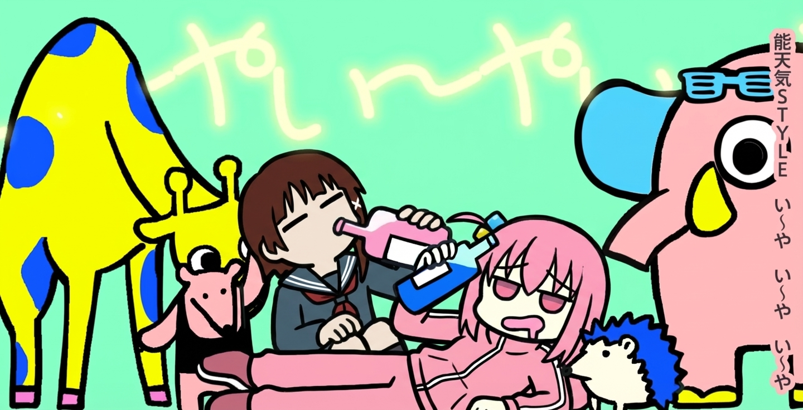
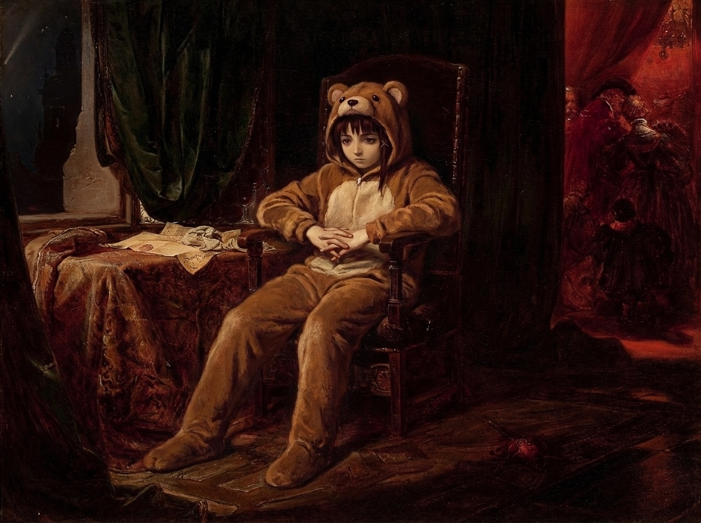
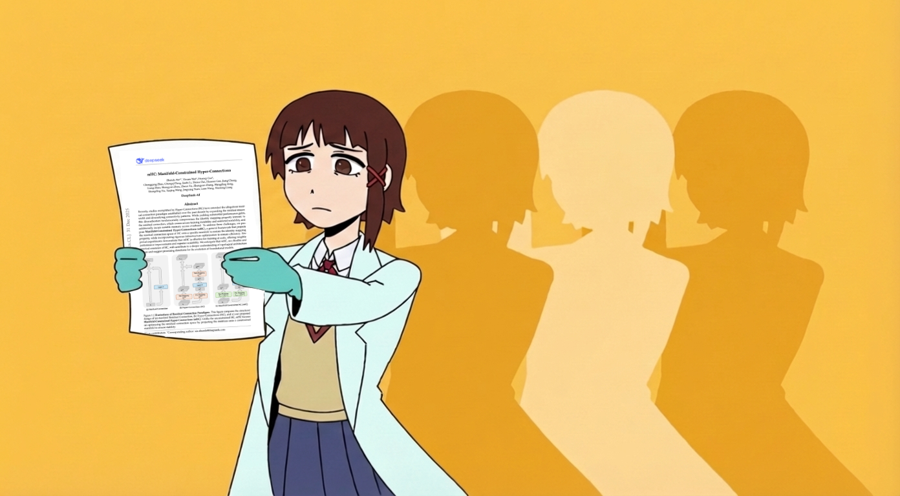
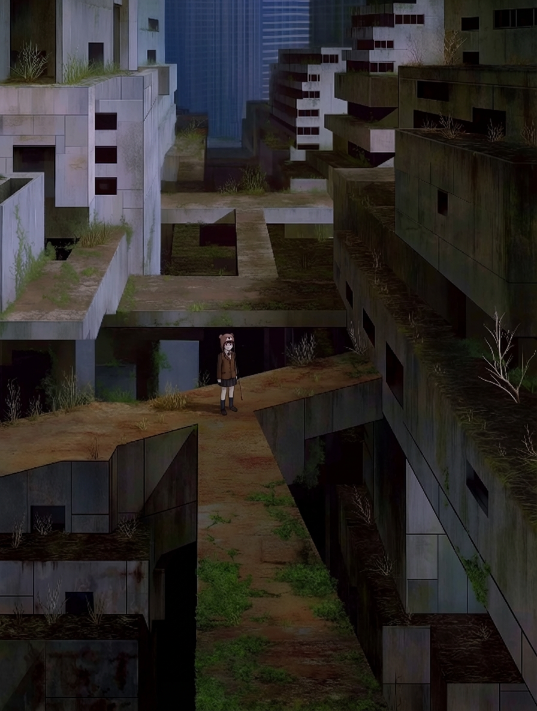
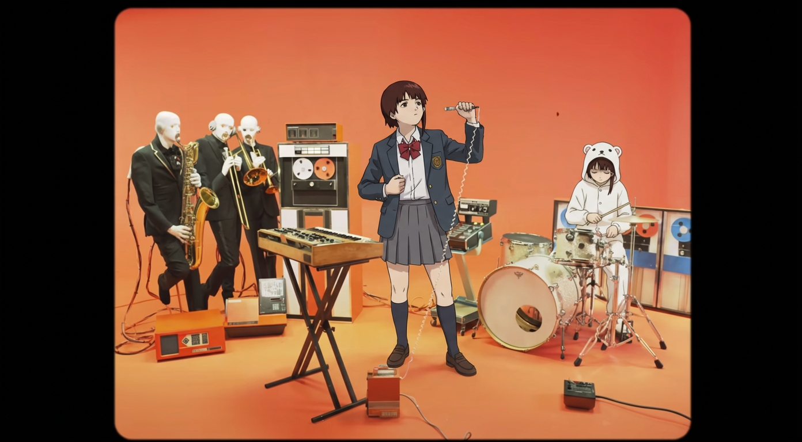
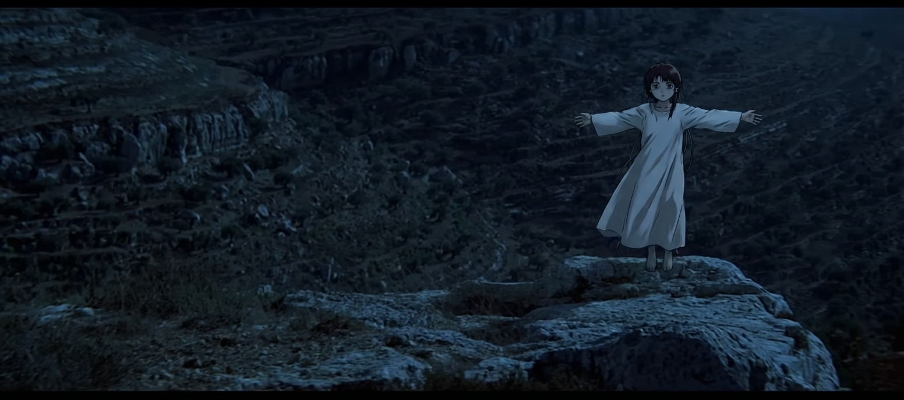

Lains
Table of Contents
Gallery of Generated Lains
While Evangelion highlights the technology of the animation medium itself to call our notions of reality into question, Serial Experiments Lain presents its viewers with an animated world in which technology, specifically the computer, both creates and deconstructs reality. While the EVA in Evangelion is essentially anthropomorphized, a concrete Other that is, initially at least, a necessary part of the characters’ identities, the “machine” in Lain is invisible, part of a world known as the Wired in which the machine not only supports but literally constructs identity. This premise leads both characters and viewers on a darkly surreal adventure into a virtual house of mirrors where identities shift, disappear, and reformulate and where death and life are refigured to create a disorienting and disquieting vision of a very near future.
– Susan Napier, When the Machines Stop: Fantasy, Reality, and Terminal Identity in Neon Genesis Evangelion and Serial Experiments Lain
For The Rest of my Life I'm Junk, Whatever

The Summit of Babel, Reached Through Skill
Surrounded by Beautiful Blue Light
a loner, living in the castle's ruins, trying to reconcile past and present

The worldly desires I wish would disappear seem to have survived after all, survived after all!!

I don't care about the night I don't like
If I don't know the words I've lost, I'll climb aboard the local train


The fourteenth me laughs. There's no "real" you, right?1
Surely I've exceeded expectations

(a million little red colored death blows)